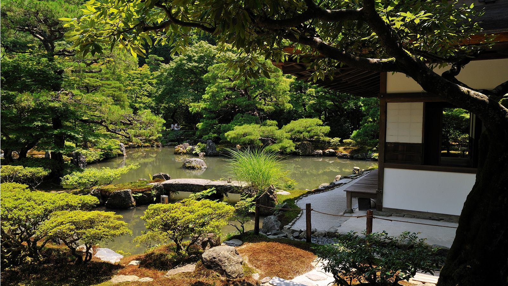
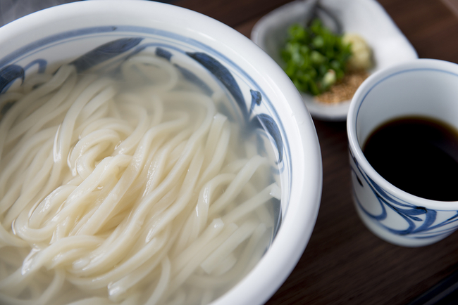
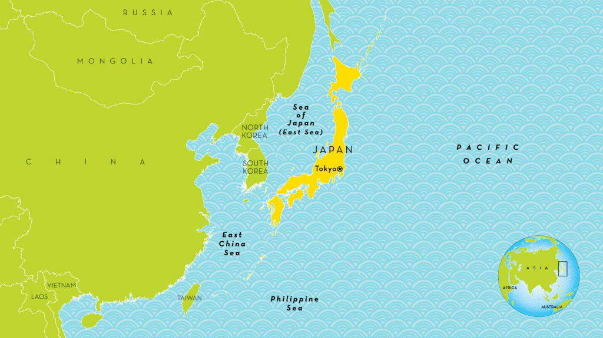
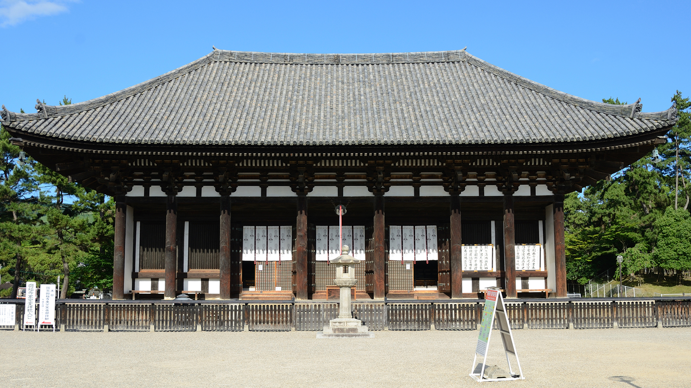
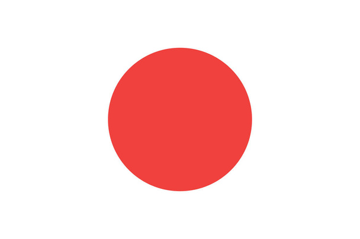
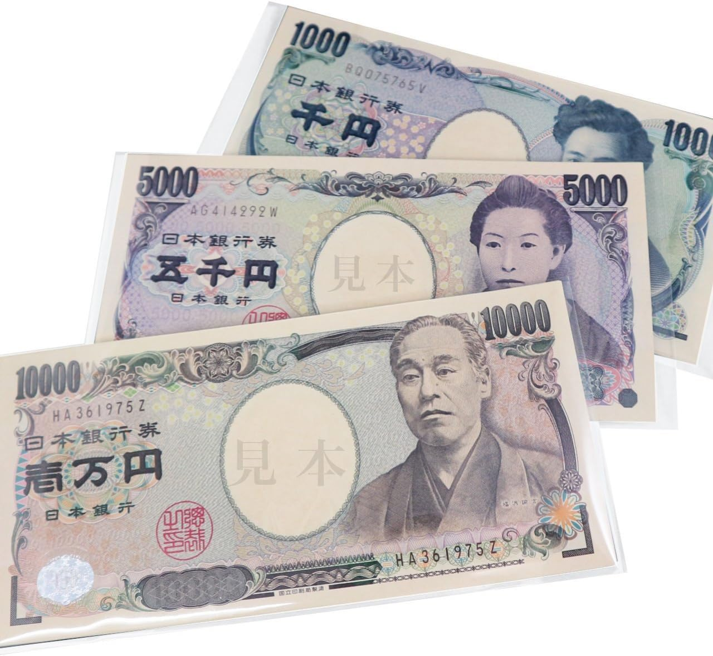
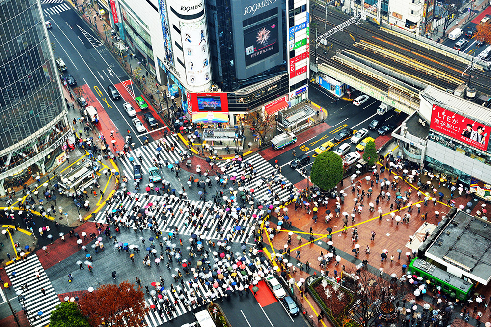

   
  
Japan is an archipelago, or string of islands, on the eastern edge of Asia.
Japan is an archipelago, or string of islands, on the eastern edge of Asia. There are four main islands: Hokkaido, Honshu, Shikoku, and Kyushu. There are also nearly 4,000 smaller islands! Japan's nearest mainland neighbors are the Siberian region of Russia in the north and Korea and China farther south. Almost four-fifths of Japan is covered with mountains. The Japanese Alps run down the center of the largest island, Honshu. The highest peak is Mount Fuji, a cone-shaped volcano considered sacred by many Japanese. Japan can be a dangerous place. Three of the tectonic plates that form Earth's crust meet nearby and often move against each other, causing earthquakes. More than a thousand earthquakes hit Japan every year. Japan also has about 200 volcanoes, 60 of which are active.
The Japanese are famous for their willingness to work very hard. Children are taught to show respect for others, especially parents and bosses. They learn to do what's best for their family or company and worry less about their own needs. Japanese food is very different from food in Western countries. There is lots of rice, fish, and vegetables, but little meat. With little fat or dairy, this diet is very healthy, which helps Japanese people live, on average, longer than any other people in the world.
The Japanese people have a deep affection for the beauty of the landscape. The ancient Shinto religion says natural features like mountains, waterfalls, and forests have their own spirits, like souls. Most of Japan is covered by countryside. But with more than 100 million people living in such a small place, wildlife has suffered. Pollution is now tightly controlled, but road building and other human activities have harmed natural habitats. About 136 species in Japan are listed as endangered. The warm Tsushima Current flows from the south into the Sea of Japan, where it meets a colder current from the north. The mixing of waters makes the seas around Japan very rich in fish and other sea life.
Japan is the only country in the world with a reigning emperor. Emperors have no real power, but they are still revered as a symbol of the country's traditions and unity. World War II devastated Japan's economy. But the Japanese people's hard work and clever innovation turned it around, making it the second largest economy in the world. Japan's high-tech industry makes some of the most popular electronic products in the world.
People first came to Japan about 30,000 years ago. At the time, the main islands were connected to Siberia and Korea by bridges of dry land, so people crossed on foot. The first society, called the Jomon culture, arose about 12,000 years ago. Around the same time, the Ainu people arrived by boat from Siberia. The Jomon and Ainu survived for thousands of years, hunting, fishing, and gathering plants. In 300 B.C., the Yayoi people came to Honshu Island from Korea and China. They were skilled weavers, tool makers, and farmers who began cultivating rice in flooded paddy fields. In 660 B.C., Japan's first emperor, Jimmu Tenno, came to power. Emperors controlled Japan until the 12th century A.D., when military rulers, called shoguns, took control and ruled by might. Europeans first arrived in Japan in 1543, bringing guns and Christianity. In 1635, the ruling shogun closed Japan to foreigners and forbade Japanese to travel abroad. This isolation lasted more than 200 years. In 1868, the shoguns were overthrown and emperors returned. This was a time of great change and modernization for Japan. During World War I (1914-1917), Japan fought on the side of the U.S. But on December 7, 1941, Japan bombed the United States navy fleet at Pearl Harbor in Hawaii and the U.S. entered World War II. From 1941-1945, Japan's military leaders fought against the U.S. and the allied forces. In August 1945, the U.S. dropped atomic bombs on the Japanese cities of Hiroshima and Nagasaki, killing about 115,000 people. Japan surrendered a few days later.